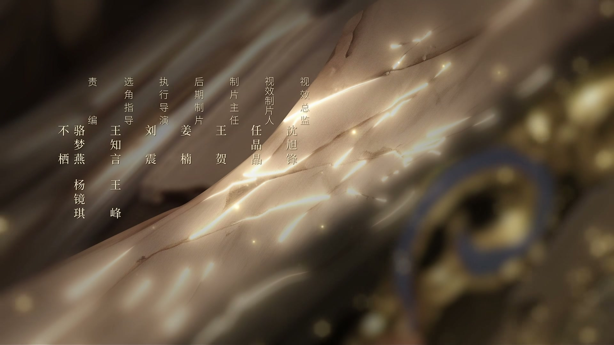
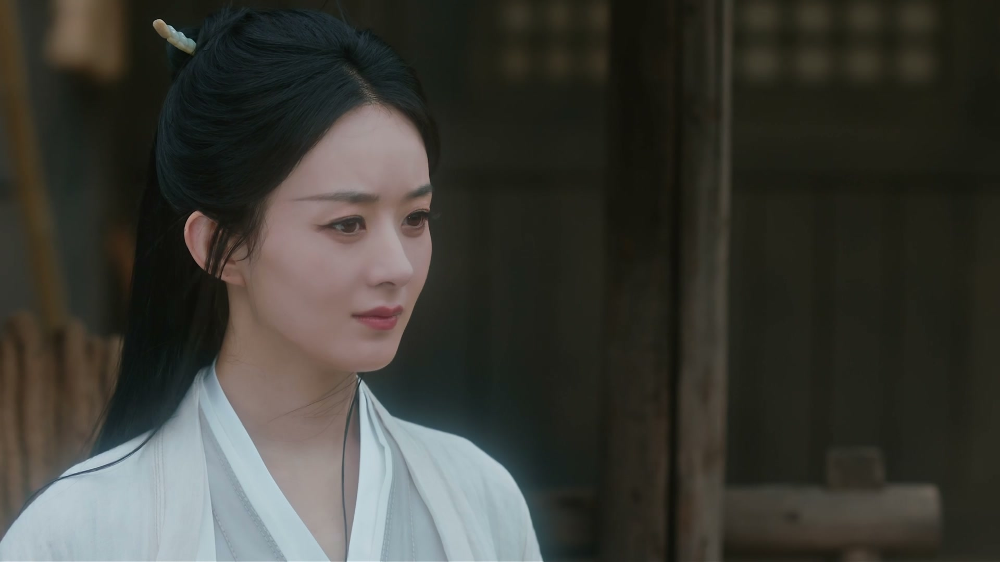
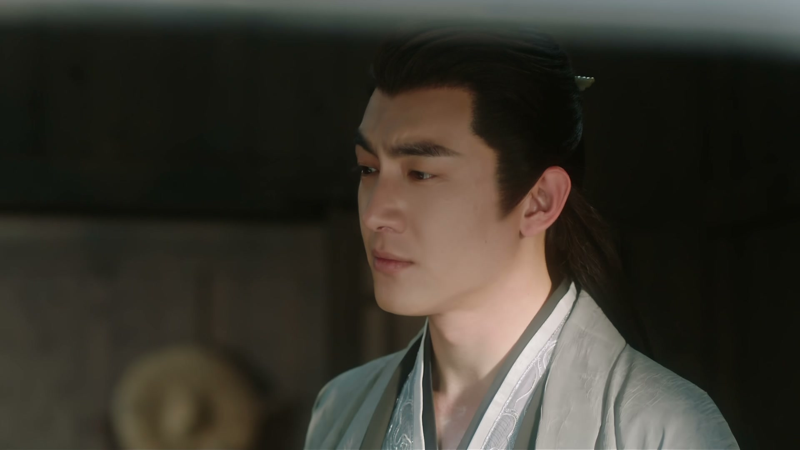
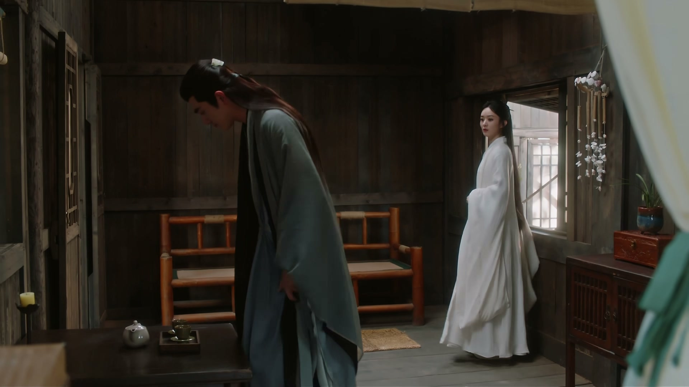
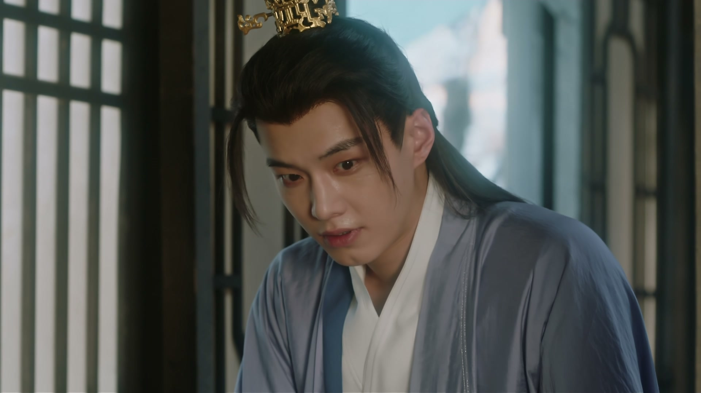
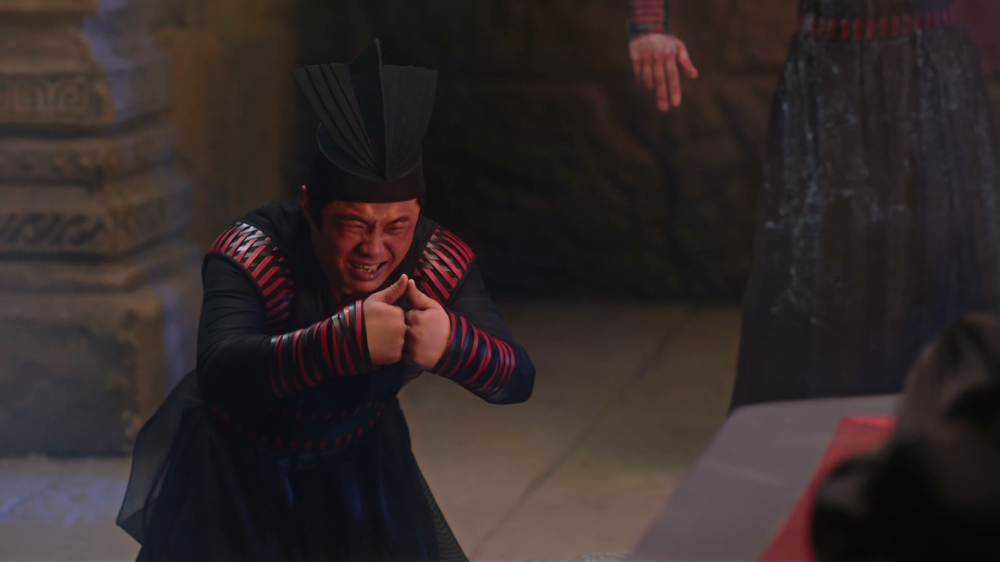
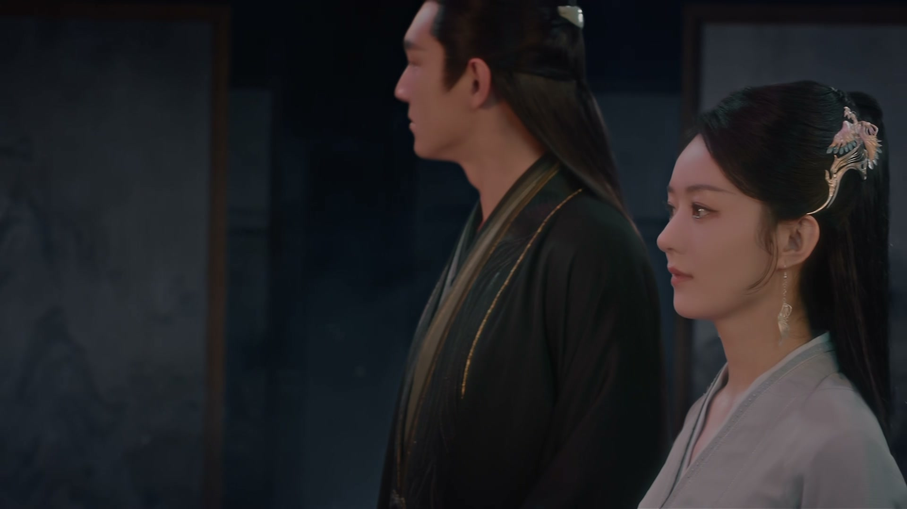
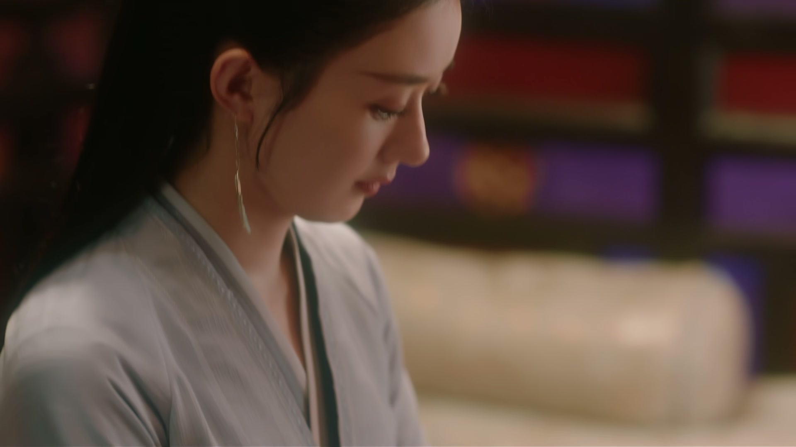
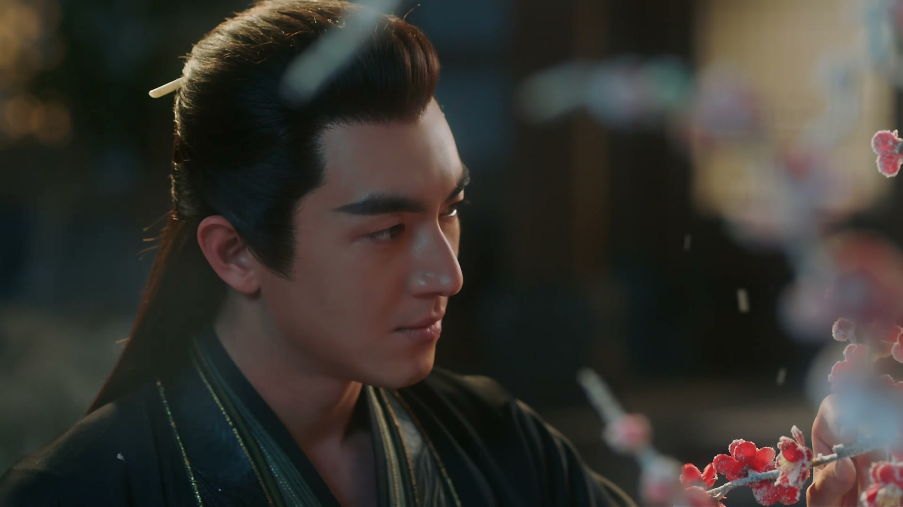

有些「死」，反而换来新生
情境：沈璃「战死」的消息传遍三界，婚约随之取消。她震惊之余，也挣脱了政治联姻的桎梏，得以与行止同行北上。
遇到这种情况，可以这样做
- 被安排好的路断了，也许正是新的路。
- 看似的失去，可能是另一种自由。
- 命运关上一扇门，往往留了一扇窗。

Drama Recap · 剧情图文总结
第 29 集 · 雪山问药
三界皆传碧苍王沈璃已战死，婚约就此作罢；行止带她北上大雪山寻金娘子求药，血莲子复五感、五彩流火莲助涅槃，而苻生已召集黑鸢直扑雪山而来。
三界皆知碧苍王沈璃已战死，与拂容君的婚约就此作罢——行止淡淡说出这句话时，她才知道自己已经「死」了。他带她北上大雪山找金娘子求药：血莲子固本、五彩流火莲助她真正涅槃。而魔头苻生也盯上了大雪山，正召集黑鸢倾巢而来。
第 29 集开篇，行止信手便挡下来使的术法，放话「滚回去告诉拂容君，行止不日便登门拜访」。沈璃见识他的身手，二人斗嘴间心照不宣——他早知道她是沈璃。苻生追兵将至，她请行止送自己回灵界，被他一句「不送」堵了回去。
剧里的鸡毛蒜皮，往往是人生的缩影。这些情节不只是故事——当你在现实中遇到同样的处境时，它们能提醒你：先做什么、别做什么、怎么说才有效。
情境：沈璃「战死」的消息传遍三界，婚约随之取消。她震惊之余，也挣脱了政治联姻的桎梏，得以与行止同行北上。
情境：行止默默以自身神气接好沈璃的断枪，只等痊愈再还；递花也只说「顺路带的一点心意」。
情境：一路上插科打诨，行止却在风雪里认真道：「谁都可以说我年纪大了，唯独你不行。」
情境：金娘子没有急着开方，而是把脉断出沈璃涅槃未成、灵力相冲的症结，再对症下药。
情境：五感时好时坏的日子里，沈璃尝尽混沌；血莲子让她触觉、嗅觉、味觉回归，她欣喜不已。
情境：金娘子封着邪物的禁地，沈璃只看了一眼便不再多问——有些好奇，是要命的。

行止信手便挡下来使的术法，那人惊得直呼「不可能」。行止淡淡吩咐：「滚回去告诉拂容君，行止不日便登门拜访。」
沈璃在旁看得真切：「我征战沙场这么多年，却从未听说一个神君，竟能将对手打成这样。」
二人目光一对，心照不宣——「你是不是早就知道是我了？」「你不是早知道我知道了？」行云是行止，她早该想到了。
关键台词 · KEY QUOTES

苻生追兵将至，沈璃点破：「如今苻生追兵已到，这场戏，我演不下去了。」她提议跟着方才放走的人，一路顺藤摸瓜找到苻生。
行止拦下她：「不去。如今你有伤在身，我不会留你一个人面对任何危险。」
沈璃改口请他送自己回灵界，行止却道「不送」——「若王爷有本事，自己回去吧。」她哭笑不得：「你这是在为难我。」
关键台词 · KEY QUOTES

沈璃条分缕析地讲回灵界的理由：两界正共同抵御外敌，与拂容君完婚可安两界人心；回去或能寻回法力、恢复五感。
行止却先泼下一盆冷水：「第一，碧苍王跟拂容君的婚约，取消了。」
沈璃愣住：「什么？取消了？」行止说得云淡风轻：「三界皆知碧苍王沈璃已战死，天君的孙子，为什么要跟一个死人成亲呢？」——原来她早就「死」了。
关键台词 · KEY QUOTES

躲在暗处听了许久的拂容君忽然现身：「打扰了。」他带来两味药的消息——北方大雪山，金娘子的雪山妖市，什么稀罕物什都有。
沈璃想起自己的断枪，行止却道：「你那枪，我已经接好了。」她疑心那枪杀伐之气与他的神气相冲、恐大损身体，又疑灵尊怎会轻易交出她的遗物。
行止递过一朵花，只说是「顺路带的一点心意」，又任她打趣「婚约解除的时候，你是不是嘴都笑烂了」，约定两日后北上。
关键台词 · KEY QUOTES

魔界这边，苻生得知黑鸢被行止以神器冻成冰雕，行止与沈璃正处在一处。
手下求他救人，他却不以为意：「行止与那冰雕，都有大用。」又下令：北海三皇子跑了便留他无用，将他的东西与另外两物好生保存。
末了他抬眸下令：「立刻召集所有黑鸢，随我出发大雪山！」祥和求药路，杀机已暗中逼近。
关键台词 · KEY QUOTES
北上途中，风雪刺骨。行止解下外衣：「这个给你披着吧。」沈璃嘴硬：「这温度，我觉得刚刚好。」
二人说起大雪山金蛇妖的来历，行止嘴瓢谈到「年纪」，惹她多心，连忙补救又越描越黑。
末了他却认真道：「谁都可以说我年纪大了，唯独你不行。」沈璃心口一乱，行止伸出手：「那我牵着你的手。」
关键台词 · KEY QUOTES

上山路上，岩壁上刻着一行大字：「有朝一日刀在手，杀尽上古神君……」沈璃打趣行止是不是得罪了这山主，行止矢口否认。
金娘子翩然现身，一身公子装却自称「奴家」：「是男是女何妨？奴家金娘子，有礼了。」
她一见行止便来劲，直拿「勾引」「做媒」打趣，行止面不改色：「他勾引不了我。」沈璃在旁看得津津有味。
关键台词 · KEY QUOTES
金娘子把脉便断出症结：沈璃前不久刚涅槃过，体内却有一灵力充盈之物在涅槃时被焚化、融进血脉，与自身灵力相冲、气血逆行，才致法力暂失、五感时好时坏。
「若是长久如此，恐怕只会愈演愈烈。」金娘子正色道，「姑娘或许真的会变成废人。」
血莲子可助固本、五彩流火莲可助两力融合、真正完成涅槃。行止以「天外天星辰」为酬求药，金娘子欣然应下，约定一连九日、日日不能断，中断则前功尽弃，姑娘或许命丧黄泉。
关键台词 · KEY QUOTES

金娘子以血莲子为沈璃调息。沈璃闭眼静心，片刻后试着去感知四周——触觉在，嗅觉在，味觉也在。
她睁开眼，难掩欣喜：「行止，我的五感终于恢复了！此药果然管用。金娘子的医术，真的让我大开眼界。」
金娘子打着哈欠邀功，又意味深长地瞥了行止一眼，那点小心思全写在脸上。
关键台词 · KEY QUOTES
金娘子引二人到别院安置，大方表示山中宝物随她挑，条件却是「从奴家山里捡走一个单身男人」，被沈璃一句「休得胡言」顶了回去。
到了治伤之处，金娘子却把行止拦在门外：「这里面是奴家为姑娘治伤的地方，你可不能进。待会儿姑娘可是要宽衣解带的呀。」
行止坚持要在里面守着，金娘子反将一军：「你若非要进去，那好，你来治疗，我在一旁守护。只是这治疗过程中，神君必定会有肌肤之亲——神君你，你行吗？」行止只得退让：「算了，我在外面守着便是。」
关键台词 · KEY QUOTES
金娘子领沈璃穿过炼药禁地，指着深处一道门叮嘱：「那里可不是活物该去的地方。」
她坦言自己到底是个妖，早年在洞悬里封了些邪物：「这么多年过去了，也不知道他们长成什么模样了。」
最后她正色道：「姑娘，你若爱惜性命，便一定要记住：千万别去那儿，千万别对它好奇。」沈璃应下，心中却隐隐觉得，这道门迟早会出故事。
关键台词 · KEY QUOTES

五彩流火莲入体，金娘子提醒：「会有心痛，你忍着。」沈璃咬牙撑过一波又一波剧痛，额角全是冷汗。
金娘子一边施术一边碎嘴：「这行止神君三棍打不出个屁来，如今也知道着急了。关键时刻，还是得看老娘。」
沈璃这才发现行止一直在门外以法力偷听，被点破后依然理直气壮。九日的涅槃之约，就此开始。
关键台词 · KEY QUOTES
三界都当她已战死，婚约随之取消；她随行止北上求药，血莲子复五感、五彩流火莲助涅槃，在治疗中独自挺过黑暗。
信手退敌，坦言「不送」她回灵界；默默修好断枪、以天外天星辰求药，风雪里说出「唯独你不行」，又在门外守候、偷听被抓包。
婚约解除后仍暗中关注沈璃，偷听半晌后现身献上金娘子的药方，一路同行北上，是本集的喜剧担当与助攻。
一身公子装却自称「奴家」，医术通神；一眼断出沈璃涅槃未成之症，以血莲子、五彩流火莲相助，也埋下禁地与做媒的诸多笑谈。
得知行止与沈璃去向，收好北海三皇子遗留之物，召集所有黑鸢直扑大雪山——九日疗程的致命阴影就此笼罩。
追踪行止沈璃时被行止以神器冻成冰雕，苻生却称「行止与那冰雕都有大用」，为后续埋下由头。
本集未现身，只在沈璃回忆中「当初我晕晕糊糊被墨方带走」被提及，串起她流落人间的来路。
风雪大雪山，行止认真道：「谁都可以说我年纪大了，唯独你不行。」插科打诨一路，只这一句是真心，沈璃一时不知如何接话。
沈璃还在盘算回灵界完婚安两界，行止却淡淡抛来真相：「三界皆知碧苍王沈璃已战死，天君的孙子为什么要跟一个死人成亲呢？」她这才知道，自己已经「死」了。
沈璃的银枪断成两截，行止却早已用自身神气接好，只等她痊愈再还。她疑心那枪与他神气相冲、恐大损身体——默默接枪的那一刻，情意已重过神躯。
金娘子一搭脉便断出沈璃涅槃未成、灵力相冲的症结，两味药、九日之约说得头头是道；行止为求药许下「天外天星辰」，连她都啧啧称奇。
治疗需宽衣解带，行止被迫退到门外守候，却被金娘子一句「原来行止是在偷听啊」当场抓包——三界第一神君，也有放不下的时候。
黑鸢被冻成冰雕，苻生却笑言「行止与那冰雕都有大用」，收好北海三皇子遗留之物，召集所有黑鸢直扑大雪山——祥和求药路，暗处杀机已近。
黑鸢被冻成冰雕，苻生反而说「很有用」；他召集所有黑鸢直扑大雪山，而沈璃的治疗一连九日不能中断——致命杀机已对准这一场疗伤。
沈璃疑心接枪大损行止身体，行止却只回一句「我什么时候受过伤」——他以自身为代价的付出，终要在日后兑现成神格的代价。
金娘子把邪物封在洞悬深处，叮嘱沈璃「千万别去，千万别好奇」——越是讳莫如深，越说明这道门日后必有重开之时。
行止以天外天星辰为酬，金娘子千年前就想摘星而未果——摘星必有代价，这笔账迟早要还。
五彩流火莲九日连治、一日不可断，为苻生来袭埋下命门；沈璃「我还是那个无坚不摧的碧苍王」的自勉，也预告涅槃凶险。